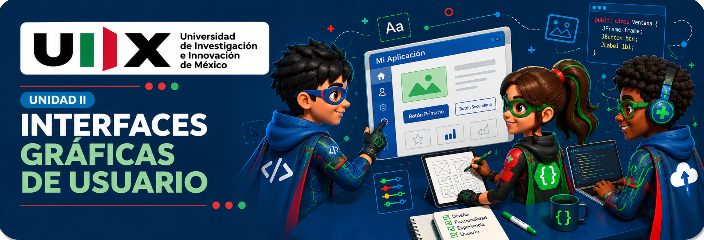

Unidad II · Laboratorio visual
Interfaces Gráficas de Usuario
Juega con jerarquía, decisiones de flujo, accesibilidad y retroalimentación. La misión permanece cerrada hasta superar seis juegos.
XP0
Recursos multimedia locales
Interfaces gráficas
Misión · 270 XP + 🖥️
🖥️ Diseña la interfaz del caso real
Define usuario, objetivo, flujo, componentes, validación y feedback. La evidencia debe justificar decisiones de interacción.
Laboratorio cerrado
Supera los seis juegos para habilitar la misión.